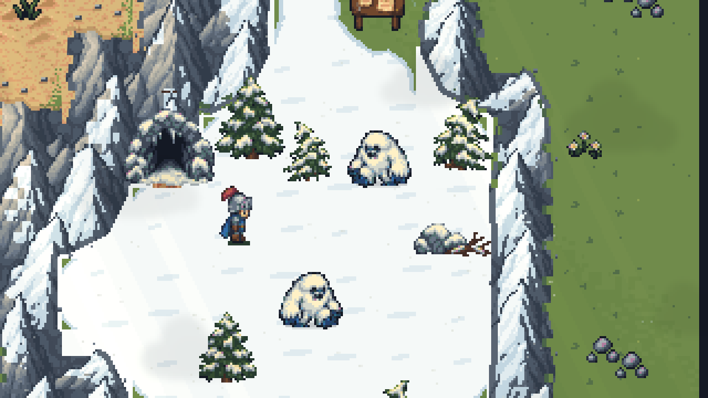
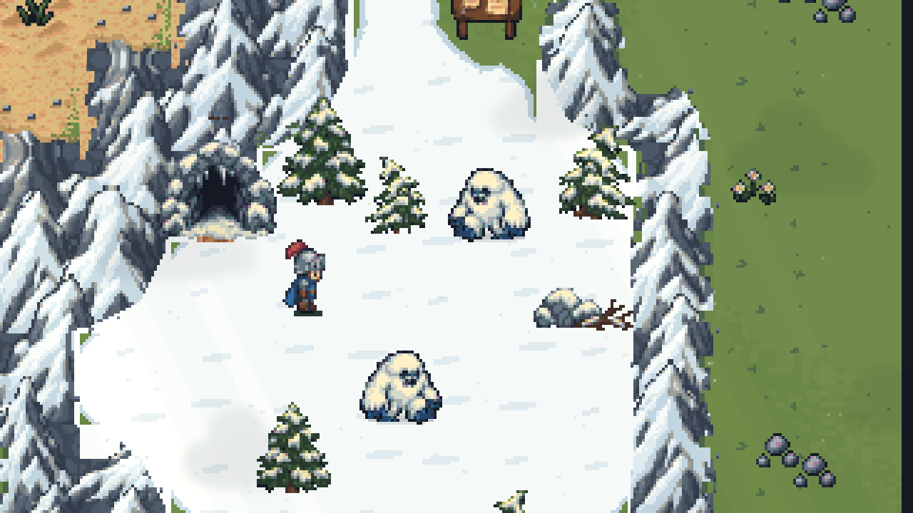
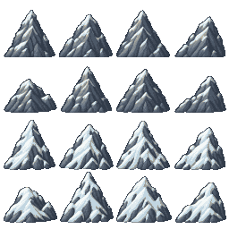

Dedicated snow-covered mountain sprites
Painted snow folds, overhanging ledges and sheltered rock give the basin its winter forms. Lightly dusted peaks bridge the transition into the bare ranges.
Inside the basin
Before · snow recoloring
After · dedicated winter sprites
Map comparison
Drag the divider: previous treatment on the left, dedicated sprites on the right.
The winter sprites
Eight lightly dusted variants above, eight snow-laden variants below. This is the native pixel artwork used by the game.

Verified: 335 overworld checks and 41 snow checks passed, including all 40,960 matching mountain overlap pixels. Changes are confined to ranges near existing snow terrain; 28 surface regions are byte-for-byte unchanged. Paths, cave approaches and save data are preserved.
Source art created with built-in imagegen. Generation prompt · Production sprite sheet · Verification record